31. Լույսի բեկումը: Բեկման օրենքը
Լույսի բեկման օրենք:
Եթե միջավայրը անհամասեռ է, ապա լույսը տարածվում է ոչ ուղղագիծ:
Երկու միջավայրերի բաժանման սահմանին լուսային ճառագայթի էներգիան կարող է մասամբ կլանվել, մասամբ անդրադառնալ, իսկ եթե երկրորդ միջավայրը թափանցիկ է, նաև մասամբ անցնել այդ միջավայր՝ փոխելով տարածման ուղղությունը:
Լույսի ճառագայթի ուղղության փոփոխությունը մի միջավայրից մյուսին անցնելիս, կոչվում է լույսի բեկում:
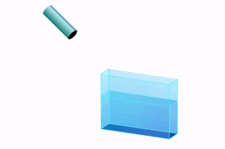
Դիտարկենք երկու թափանցիկ միջավայրերի բաժանման սահմանին ընկնող AO ճառագայթի ընթացքը երկրորդ միջավայրում: Դա կարելի է իրականացնել օպտիկական սկավառակի միջոցով, որի կենտրոնում հայելու փոխարեն այս անգամ ամրացված է ապակուց, կամ այլ թափանցիկ նյութից պատրաստված կիսագլան:
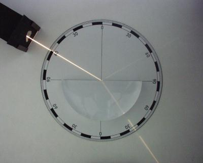
Ընկնող ճառագայթի՝ AO և անկման կետում երկրորդ միջավայրի (ապակու) մակերևույթին տարված MN նորմալի միջև կազմած անկյունը՝ ∠MOA-ն կոչվում է անկման անկյուն և նշանակվում α տառով:
Երկրորդ միջավայր անցած, իր տարածման ուղղությունը փոխած OEճառագայթին անվանում են բեկված ճառագայթ:
Բեկված ճառագայթի և նույն MNնորմալի միջև կազմած անկյունը ∠NOE-ն կոչվում է բեկման անկյուն և նշանակվում է β տառով:

Փորձը ցույց է տալիս, որ եթե ընկնող AO ճառագայթը գնվում է սկավառակի հարթության վրա, ապա բեկված OEճառագայթը նույնպես կգտնվի նույն հարթության մեջ:
Փորձ ցույց է տալիս նաև, որ երկրորդ միջավայրից (ապակուց) դուրս գալիս լուսային ճառագայթը այլևս չի բեկվում, քանի որ ընկնում է գնդաձև մակերևույթին ուղղահայաց:
Մակերևույթին ուղղահայաց ընկնող ճառագայթը չի բեկվում:
Կատարելով բազմաթիվ փորձեր և չափելով α անկման և β բեկման անկյունները, կարելի է համոզվել, որ այդ անկյունների սինուսների հարաբերությունը տվյալ երկու միջավայրերի համար հաստատուն մեծություն է: Այն կախված չէ անկման անկյունից և հավասար է այդ երկու միջավայրերում լույսի տարածման արագությունների հարաբերությանը:
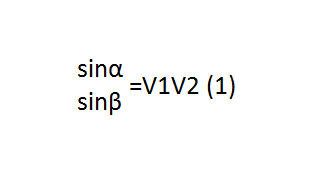
այտեղ V1-ը լույսի արագությունն է առաջին միջավայրում (օդում), իսկ V2-ը՝ երկրորդ միջավայրում (ապակու մեջ):
Ընդհանրացնելով փորձնական արդյունքները կարելի է սահմանել լույսի բեկման օրենքը:
Ընկնող ճառագայթը, բեկված ճառագայթը և անկման կետում երկու միջավայրերի բաժանման սահմանին տարված նորմալը գտնվում են նույն հարթության մեջ:
Անկման անկյան սինուսի հարաբերությունը բեկման անկյան սինուսին հաստատուն մեծություն է տվյալ երկու միջացվայրերի համար:
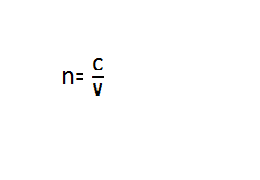
Լույսի բեկման օրենքը հայտնաբերել է հոլանդացի ֆիզիկոս Վիլեբրորդ Սնելիուսը (1580-1626 թթ.):
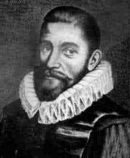
Օպտիկապես թափանցիկ միջավայրերը կարելի է բնութագրել ֆիզիկական մեծությամբ, որը կոչվում է բեկման ցուցիչ:
Միջավայրի բեկման ցուցիչ, կամ բացարձակ բեկման ցուցիչ կոչվում է վակումում և տվյալ միջավայրում լույսի տարածման արագությունների հարաբերությունը
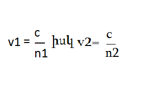
Այստեղ n-ը տվյալ միջավայրի բեկման ցուցիչն է, c-ն լույսի արագությունն է վակումում, իսկ v-ն` լույսի արագությունը տվյալ միջավայրում:
Սահմանումից հետևում է, որ միջավայրի բեկման ցուցիչը ցույց է տալիս, թե լույսի տարածման արագությունը տվյալ միջավայրում քանի անգամ է փոքր տվյալ միջավայրում լույսի տարածման արագությունից:
Քանի որ c-ն միշտ մեծ է v-ից, հետևաբար միջավայրի բեկման ցուցիչը միշտ 1-ից մեծ, անչափողական մեծություն է:
Տարբեր օպտիկապես թափանցիկ միջավայրերի բեկման ցուցիչների արժեքները բերված են աղյուսակում:
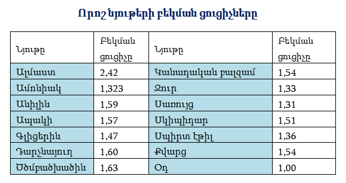
Աղյուսակից երևում է, որ օդում լույսի բեկման ցուցիչը շատ քիչ է տարբերվում 1-ից և հաշվարկներում վերցվում է 1:
Որքան մեծ է տվյալ միջավայրի բեկման ցուցիչը այնքան այն համարվում է օպտիկապես խիտ, որքան փոքր, այնքան օպտիկապես նոսր:
Աղյուսակից երևում է, որ ամենամեծ բեկման ցուցիչը ունի ալմաստը, հետևաբար նա օպտիկապես ամենախիտն է:
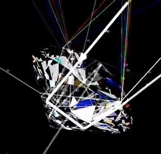
Լույսի բեկման օրենքը կարելի է ներկայացնել նաև բեկման ցուցիչների միջոցով, հաշվի առնելով բեկման ցուցիչի սահմանումը, որից հետևում է՝
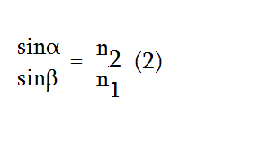
Տեղադրելով այս արտահատությանները (1) բանաձևի մեջ կստանանք՝
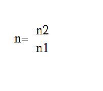
մեծությանը անվանում են հարաբերական բեկման ցուցիչ, որն արդեն կարող է ընդունել ցանկացած արժեք:
Եթե ճառագայթը օպտիկապես ավելի նոսր միջավայրից անցնում է ավելի խիտ միջավայր, օրինակ՝ օդից - ջուր, ապա քանի որ n2>n1, ուրեմն sinβ < sinα, որից հետևում է՝ β < α, ինչպես պատկերված է նկարում:
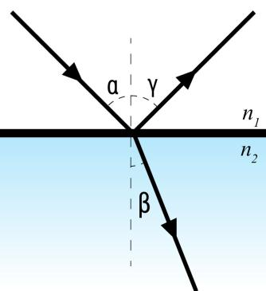
Իսկ եթե ճառագայթը օպտիկապես խիտ միջավայրից է անցնում նոսր միջավայր, այսինքն n1>n2, օրինակ՝ ապակուց - օդ, ապա բեկման օրենքից հետևում է, որ sinα < sinβ:
Այսինքն՝ α < β, այնպես ինչպես պատկերված է նկարում:
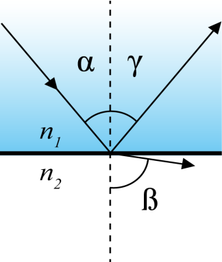
Լույսի բեկմամբ են բացատրվում բազմաթիվ օպտիկական երևույթներ. բերենք դրանցից մի քանիսը՝
1. ջրամբարի խորությունը մեզ թվում է ավելի փոքր քան իրականում է,
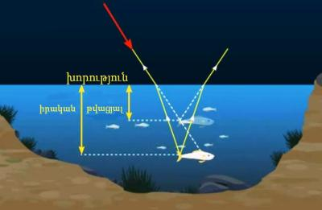
2. ջրով լի բաժակի մեջ մտցված ձողիկը թվում է կոտրված,
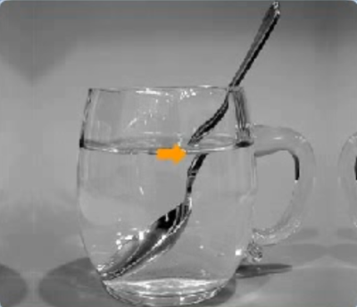
3. հորիզոնի նկատմամբ Արեգակի և աստղերի դիրքը թվում է իրականից ավելի բարձր, իսկ Արեգակի չափերն ավելի մեծ, երբ այն հորիզոնին մոտ է:
4. մթնոլորտի անհամասեռությամբ և նրանում լույսի բեկմամբ է պայմանավորված աստղերի առկայծումը և օդատեսիլի (միրաժ) առաջացումը: